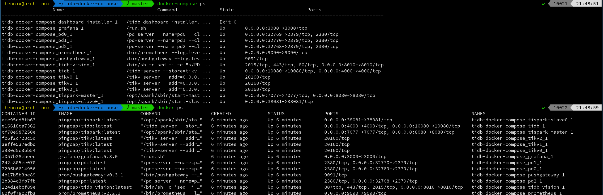
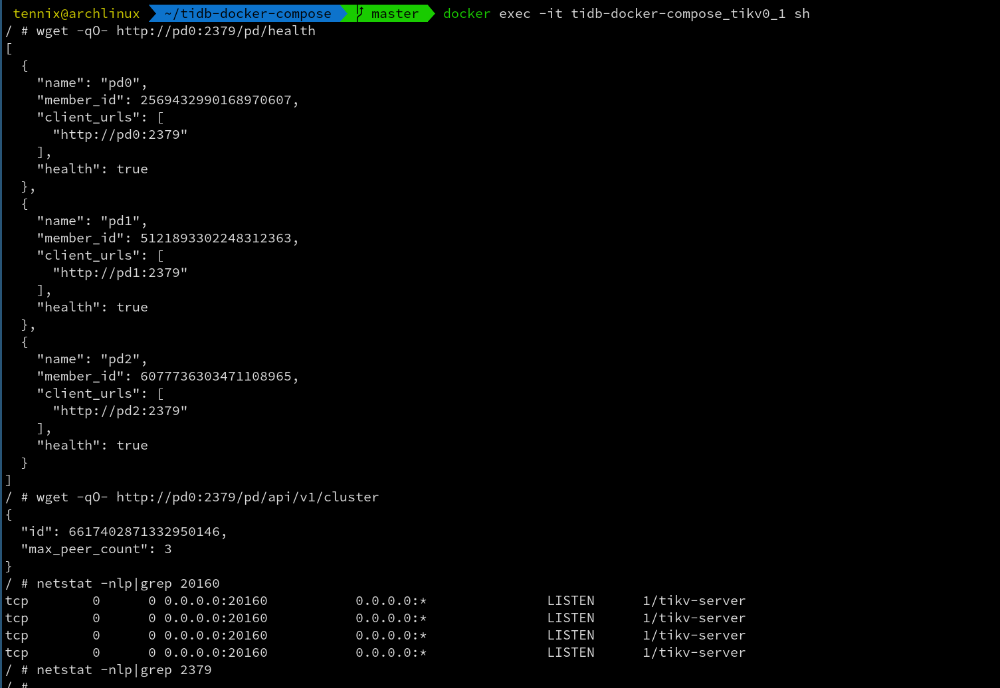
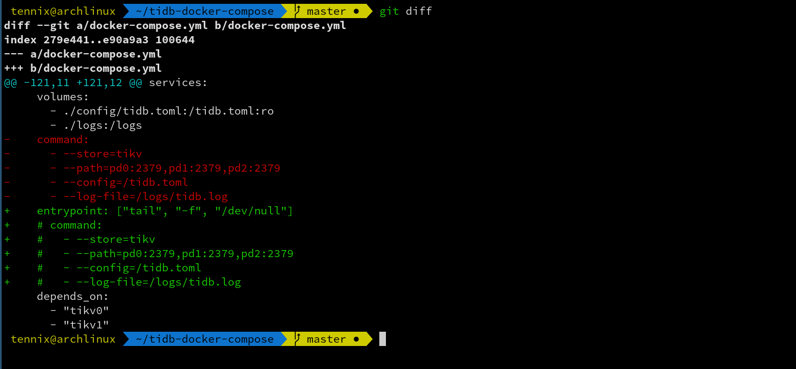
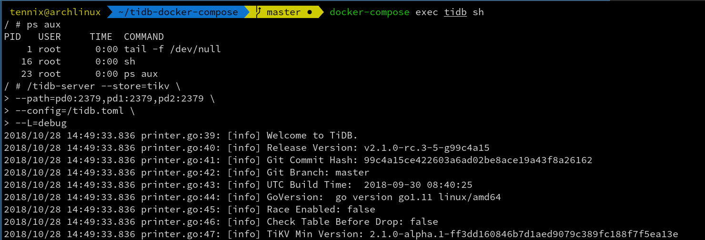

调试 Docker 容器
Table of Contents
Docker 容器作为虚拟化技术的一种，其轻量级的优点同时也带来了一些缺点：不彻底地隔离性给安全带来了隐患，裁减镜像增加了运维调试难度。本文以 tidb-docker-compose 为例谈谈 Docker 容器在出现问题时如何进行调试排查问题。
在开始之前我们可以通过下面的命令快速用 Docker Compose 在本地启动一个 TiDB 集群。
$ git clone https://github.com/pingcap/tidb-docker-compose $ cd tidb-docker-compose $ docker-compose pull && docker-compose up -d
1 日志排查
应用出现问题时最简单直接的方式就是通过应用日志进行排查了，一般容器应用程序都是将日志输出到标准输出，然后被 Docker 收集，对于这种可以通过
docker logs 和 docker-compose logs 命令查看日志，其中后者是Docker
Compose 提供的，其命令参数直接是 service name，而不是包含目录名字的容器名，所以对 Docker Compose 启动的容器用后者更方便，但是这个命令需要在包含 docker-compose.yml 的目录下执行。
tidb-docker-compose 运行起来后通过 docker ps 或 docker-compose ps
命令查看容器运行状态，如下图所示：

如下是查看 tispark-master 日志的方法
$ docker logs tidb-docker-compose_tispark-master_1 $ docker-compose logs tispark-master
docker logs 和 docker-compose logs 也支持 -f 参数实现类似于
tail -f 方式实时查看日志。
由于 Docker Compose 日志会丢，所以 tidb-docker-compose 将 pd/tikv/tidb 的日志都输出到文件了，可以直接查看 logs 目录里对应的日志文件。
2 进入容器环境中排查
通过日志分析不出应用出问题的原因时，一般可能就是运行环境问题，这时进入容器里面查看网络情况、文件权限、环境变量、内核参数等是最快捷的方式了。进入容器环境，可以通过 docker exec 命令，对应 Docker Compose 也提供了 docker-compose exec 命令，但不用加 -it 参数。
$ docker exec -it tidb-docker-compose_tikv0_1 sh $ docker-compose exec tikv0 sh

2.1 容器闪退
这种在 docker-compose 和 Kubernetes 里面比较常见，不熟悉 docker 运行原理的同学可能会照网上搜到的一些零散知识将应用改造成 docker-compose 或 Kubernetes 应用，结果应用程序水土不服，例如因为环境变量，volume 挂载，权限等问题刚一启动就崩了。
由于容器一运行就退出，而 docker exec 命令使用对象是一个正在运行着的容器，所以没法通过这种方式去排查原因。
但这时我们可以尝试让容器以一个能正常运行的命令启动而不直接运行应用程序，最简单的方式就是 sleep 了，但 pid 为 1 的 sleep 程序可能会导致容器无法被停掉。可以采用 tail -f /dev/null 来替代正常容器的启动命令。这样能保证容器运行起来，然后再通过前面提到的 docker exec 命令进入容器，查看容器网络和环境变量，也可以尝试手动将应用程序以较高的日志级别启动，看看问题出在哪里。目前 tidb-operator 就是采用这种方式来调试出问题的 pod，效果还是很不错的。

为了演示，将 docker-compose.yml 按上图修改 tidb 的启动命令为 tail -f
/dev/null ，然后按下面命令删掉 tidb 容器并重新启动：
$ docker-compose stop tidb $ docker-compose rm tidb $ docker-compose up -d
这样就解决了容器闪退的问题，再通过前面提到的 docker exec 命令进入容器，然后检查容器中的环境，例如网络、文件、环境变量等，再手动启动服务排查具体原因。
$ docker-compose exec tidb sh # /tidb-server --store=tikv \ --path=pd0:2379,pd1:2379,pd2:2379 \ --config=/tidb.toml \ --L=debug

3 gdb/perf 调试应用程序
对于 C/C++/Rust 这种偏底层的应用程序，gdb/perf 是排查线上问题很有效的工具。在使用 gdb 调试运行中的应用程序时，需要应用程序的 pid 及其binary，实际上在宿主机上是能够直接看到容器里的应用程序 pid 的，所以是可以在宿主机上直接通过 gdb/perf 工具对容器里的进程进行调试的。不过只有 高版本的 gdb 才支持 namespace，一些版本相对较旧的系统如 CentOS 系统下就没法直接在宿主机上通过 gdb 调试 Docker 容器中的应用。
要在宿主机上通过 gdb 调试容器里的进程，需要先获取应用的二进制程序，以及应用在宿主机上的 pid。下面以调试 tikv1 为例，其中 31842 是 tikv1
在宿主机上的 pid：
$ docker cp tidb-docker-compose_tikv1_1:/tikv-server tikv-server $ ps aux | grep tikv1 $ sudo gdb tikv-server -p 31842 -batch -ex "thread apply all bt" -ex "info threads"
对于 perf 也是类似的，直接找到容器应用在宿主机上的 pid，然后用该 pid 对容器进程进行调试。
4 容器镜像里工具受限
有时 docker exec 进入容器了，但是很多人为了减小容器镜像体积和攻击面而裁减掉了许多 Linux 下的基本工具，例如 ps 命令在很多容器里面就没有，更别说 curl 这类高级网络工具了，所以进到容器里面了也没法查。当然有些人可能会根据容器的基础镜像利用其包管理工具就地安装需要用的调试工具，这在某些情况下也是行之有效的。
但是特殊情况下容器里面可能会没有包管理器或甚至基础镜像是 scratch，这时由于连 shell 都没有， docker exec 命令也没法使用。但这是不是意味着应用程序除了通过日志外完全无法调试呢，答案显然是否定的。
从 Docker 华丽的外表下回到容器的本质上，Linux 上的容器是利用 Linux 内核提供的 namespace 和 cgroup 实现的应用运行环境。namespace 包括 net, pid, uts, ipc, user, mount, 将不同容器运行环境相互隔离，但是不同容器又可以共享某些 namespace，比如 docker 早期支持的 links 就可以让多个容器共享 net namespace，Kubernetes 里的 pod 也是共享 net namespace，pod 甚至还可以共享 pid namespace。而调试容器应用的难点正是容器环境是一个隔离的，这个环境是一个孤岛，里面什么东西也没有。如果我们能打通这个孤岛，调试难的问题也就迎刃而解。
明白了原理，我们就来实际操作一下。以下示例用 tidb-debug 镜像作为调试工具镜像，该镜像里面包含很多常用工具，镜像体积相对比较大，实际调试时可以是任何包含所需工具的镜像。注意下面命令中启动 debugger 容器时加了
SYS_PTRACE 参数，这是因为 gdb 和 strace 之类的调试工具需要 ptrace 权限。
$ docker run -it --rm --name=debugger --cap-add=SYS_PTRACE \ --pid=container:tidb-docker-compose_tikv0_1 \ --network=container:tidb-docker-compose_tikv0_1 \ uhub.ucloud.cn/pingcap/tidb-debug
上面例子只是进入了 tikv0 的 pid 和 network namespace，可以使用
tidb-debug 容器中的各种网络工具对 tikv0 容器进行调试，也可以用
gdb/perf 之类工具对 tikv-server 进程进行调试，如果要需要 tikv-server
的二进制程序，可以利用 docker cp 命令经主机中转一下拷贝到 tidb-debug
容器中，但是由于 pid 已经共享，实际从 tidb-debug 容器中就能看到 pid 为
1 的 tikv-server 进程，而 /proc/1/exe 即是 tikv-server 的二进制程序。
# ldd /proc/1/exe # gdb /proc/1/exe 1 -batch -ex "thread apply all bt" -ex "info threads" # curl http://pd0:2379/pd/api/v1/stores
实际上 tidb-docker-compose 项目中提供了一个方便的脚本用于调试诊断。
$ tools/container_debug -s tikv2 -p /tikv-server # gdb /tikv-server 1 -batch -ex "thread apply all bt" -ex "info threads" # ./run_flamegraph.sh 1